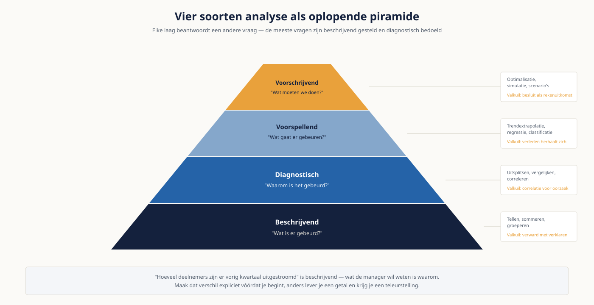

Deel 5 — Fundamenten van data-analyse
Niveau 1 — Fundament · Reader
Voorbereiding, geen vervanging
Deze cursusmap is onafhankelijk ontwikkeld door Ductus B.V. Ductus is niet gelieerd aan, geaccrediteerd door of goedgekeurd door DAMA International, IIBA, IAPP, de EDM Association of Microsoft.
Dit materiaal bereidt voor op de genoemde examens en vervangt het officiële examenmateriaal niet. Bodies of knowledge, handboeken en examenblueprints worden hier niet gereproduceerd; deelnemers schaffen die bronnen zelf aan.
Alle genoemde merken zijn eigendom van hun respectieve houders. Examengegevens gecontroleerd in augustus 2026 — verifieer vóór inschrijving bij de bron.
1. Waar dit deel over gaat
Analyseren is niet moeilijk. Weten wat je hebt aangetoond — en vooral wat níét — is dat wel. Dit deel geeft je het gereedschap om een afgebakende vraag te beantwoorden met SQL en beschrijvende statistiek, en tegelijk de discipline om de grenzen van je eigen antwoord te benoemen.
Die tweede helft is waar de meeste schade wordt voorkomen. Een analist die zegt "de klanttevredenheid stijgt door de nieuwe app" waar de data alleen een gelijktijdige beweging laat zien, kost een organisatie meer dan een analist die helemaal niets zegt. In dit vak is voorzichtigheid geen zwakte maar vakmanschap.
Leerdoelen
- Je bepaalt bij een vraag welk analysetype nodig is en welke techniek daarbij hoort.
- Je scherpt een vage vraag aan tot iets wat toetsbaar is, vóórdat je data aanraakt.
- Je schrijft SQL met SELECT, WHERE, JOIN, GROUP BY en HAVING en begrijpt de volgorde van uitvoering.
- Je herkent de stille records die een verkeerde join weggooit.
- Je kiest tussen gemiddelde, mediaan en modus en legt uit waarom die keuze het verhaal verandert.
- Je benoemt de vormen van bias die je steekproef kunnen verstoren.
- Je legt uit waarom correlatie geen causaliteit is en herkent een confounder.
2. Vier soorten analyse
| Type | Vraag | Techniek | Valkuil |
|---|---|---|---|
| Beschrijvend | Wat is er gebeurd? | Tellen, sommeren, groeperen, visualiseren | Wordt verward met verklaren |
| Diagnostisch | Waarom is het gebeurd? | Uitsplitsen, vergelijken, correleren | Correlatie voor oorzaak aanzien |
| Voorspellend | Wat gaat er waarschijnlijk gebeuren? | Trendextrapolatie, regressie, classificatie | Aannemen dat het verleden zich herhaalt |
| Voorschrijvend | Wat moeten we doen? | Optimalisatie, simulatie, scenario’s | Een besluit presenteren als rekenuitkomst |
De meeste vragen die bij een analist terechtkomen zijn beschrijvend, terwijl de vraagsteller een diagnostisch antwoord verwacht. "Hoeveel deelnemers zijn er vorig kwartaal uitgestroomd" is beschrijvend; wat de manager wil weten is waarom. Maak dat verschil expliciet vóórdat je begint, anders lever je een getal en krijg je een teleurstelling.

3. Van vraag naar analyse
De belangrijkste vier vragen stel je voordat je één regel code schrijft. Ze kosten tien minuten en besparen regelmatig dagen.
- Wie neemt op grond hiervan een besluit? Als er geen naam is, is er geen analyse maar een nieuwsgierigheid.
- Welk besluit precies, en welke opties liggen er op tafel?
- Welke uitkomst zou tot een ander besluit leiden? Als elk antwoord tot hetzelfde besluit leidt, hoeft de analyse niet.
- Welke data heb ik nodig, en wat is de gebruikscontext waarvoor die data geschikt moet zijn?
De derde vraag doet het meeste werk
"Welke uitkomst zou uw besluit veranderen?" Wie die vraag stelt aan de opdrachtgever, ontdekt vaak dat het besluit al genomen is en dat de analyse als onderbouwing achteraf dient. Dat is nuttige informatie — en het is beter om dat vooraf te weten dan achteraf.
4. SQL: het minimum dat je nodig hebt
Zes bouwstenen volstaan voor het overgrote deel van het werk. Wat je vooral moet begrijpen is de volgorde waarin de database ze uitvoert, want die verklaart de foutmeldingen die je krijgt.
| Onderdeel | Doet | Voorbeeld op Meridiaan |
|---|---|---|
| SELECT | Kiest welke kolommen je terugkrijgt | SELECT deelnemer_id, status |
| FROM en JOIN | Bepaalt uit welke tabellen, en hoe die verbonden zijn | FROM deelnemer JOIN werkgever ON ... |
| WHERE | Filtert rijen vóór het groeperen | WHERE status = 'actief' |
| GROUP BY | Vat rijen samen per waarde | GROUP BY werkgever_id |
| HAVING | Filtert de samengevatte groepen | HAVING COUNT(*) > 50 |
| ORDER BY | Sorteert het eindresultaat | ORDER BY aantal DESC |
De volgorde van uitvoering
De database leest je query niet van boven naar beneden. Eerst FROM en JOIN, dan WHERE, dan GROUP BY, dan HAVING, dan pas SELECT, en als laatste ORDER BY. Daaruit volgen twee dingen die anders onbegrijpelijk zijn: je kunt in WHERE niet filteren op een berekening uit SELECT, en het verschil tussen WHERE en HAVING is niet stilistisch maar fundamenteel — WHERE filtert rijen vóór het samenvatten, HAVING filtert groepen erna.
5. De join die stil records weggooit
Dit is de belangrijkste paragraaf van dit deel. Een inner join levert alleen rijen op waarvoor aan beide kanten een match bestaat. Rijen zonder match verdwijnen zonder waarschuwing, zonder foutmelding en zonder dat het resultaat er verdacht uitziet.
| Soort join | Levert op | Wanneer gebruiken |
|---|---|---|
| INNER JOIN | Alleen rijen die aan beide kanten voorkomen | Als je zeker weet dat elke rij een match hoort te hebben |
| LEFT JOIN | Alle rijen links, aangevuld waar rechts een match is | Als je wilt zien welke rijen géén match hebben |
Bij Meridiaan zijn 340 deelnemers gekoppeld aan een werkgever die na een fusie niet meer bestaat. Een inner join tussen deelnemer en werkgever laat die 340 stilzwijgend vallen. Het aantal dat je rapporteert is dan 340 te laag, en niets in de uitkomst wijst daarop. Dit is een plausibele verklaring voor een deel van het verschil tussen de drie deelnemersaantallen uit deel 3.
De controle die je altijd doet
Tel je bronrijen vóór de join en je resultaatrijen erna. Wijkt het af, dan weet je waarom voordat iemand anders het ontdekt. Doe dat ook als je zeker weet dat het klopt — juist dan.
6. Beschrijvende statistiek
Drie centrummaten, en de keuze ertussen verandert het verhaal.
| Maat | Wat het is | Gevoelig voor | Gebruik als |
|---|---|---|---|
| Gemiddelde | Som gedeeld door aantal | Uitschieters | De verdeling redelijk symmetrisch is |
| Mediaan | De middelste waarde | Nauwelijks iets | De verdeling scheef is of uitschieters kent |
| Modus | De meest voorkomende waarde | Niets, maar kan ontbreken of meervoudig zijn | Je met categorieën werkt |
Pensioenopbouw is het schoolvoorbeeld van een scheve verdeling: veel deelnemers met bescheiden aanspraken en een kleine groep met zeer hoge. Het gemiddelde pensioen bij Meridiaan ligt daardoor ruim boven wat de meeste deelnemers krijgen. Wie het gemiddelde rapporteert, geeft een technisch correct getal dat een verkeerd beeld schept. Rapporteer bij scheve verdelingen mediaan én gemiddelde, en benoem het verschil.
Spreiding
- Bereik: hoogste min laagste. Simpel en volledig bepaald door de twee meest atypische waarnemingen.
- Kwartielen: verdeel de waarnemingen in vier gelijke groepen. Het interkwartielbereik vertelt waar de middelste helft zit en is ongevoelig voor uitschieters.
- Standaarddeviatie: de gemiddelde afstand tot het gemiddelde. Zeer bruikbaar bij symmetrische verdelingen, misleidend bij scheve.
Een centrummaat zonder spreidingsmaat is een half antwoord. "Gemiddeld 34 dagen" betekent iets heel anders wanneer de spreiding twee dagen is dan wanneer die veertig is.
7. Uitbijters
Een uitbijter is een waarneming die ver van de rest ligt. De reflex om hem te verwijderen is bijna altijd verkeerd. Loop drie vragen langs: is het een invoerfout, is het een echte maar zeldzame waarneming, of is het een andere populatie die per ongeluk is meegekomen?
- Bij een invoerfout — een geboortedatum in 1900 — hoort de waarneming eruit, en hoort er een kwaliteitsregel bij zoals in deel 4.
- Bij een echte zeldzame waarneming hoort hij erin, want hij is waar. Rapporteer dan mediaan naast gemiddelde.
- Bij een andere populatie hoort een aparte analyse. Directeuren met een aanvullende regeling horen niet in dezelfde berekening als reguliere deelnemers.
Wat je nooit doet is uitbijters verwijderen omdat de grafiek er dan mooier uitziet. Documenteer elke verwijdering, inclusief de reden, in de verantwoording bij je analyse.
8. Steekproef, populatie en bias
Je werkt zelden met de hele populatie, ook al lijkt dat soms zo. Drie vormen van vertekening komen zo vaak voor dat je ze standaard moet natrekken.
| Vorm | Wat er gebeurt | Voorbeeld bij Meridiaan |
|---|---|---|
| Selectiebias | De groep die je bekijkt is niet representatief | Alleen deelnemers analyseren die het portaal gebruiken |
| Overlevingsbias | Wie eruit gevallen is, telt niet meer mee | Tevredenheid meten onder wie niet is vertrokken |
| Non-respons | Wie niet reageert, verschilt van wie wel reageert | Enquête ingevuld door de meest betrokken deelnemers |
De vraag die je jezelf stelt: wie ontbreekt er in mijn data, en zou die het antwoord hebben veranderd? Bij Meridiaan ontbreken de deelnemers zonder e-mailadres in vrijwel elke digitale meting — 4,2 procent, en dat is bijna zeker geen willekeurige 4,2 procent.
9. Correlatie en causaliteit
Twee grootheden bewegen samen. Daaruit volgt niet dat de een de ander veroorzaakt. Er zijn vier mogelijkheden, en drie ervan worden routinematig genegeerd: A veroorzaakt B, B veroorzaakt A, C veroorzaakt beide, of het is toeval.
Een concreet voorbeeld
Bij Meridiaan blijkt: deelnemers die het pensioenportaal gebruiken, doen vaker aan vrijwillige bijstorting. De verleidelijke conclusie is dat het portaal tot bijstorting aanzet, en dus dat meer portaalgebruik meer bijstorting oplevert. Maar leeftijd en inkomen verklaren beide gedragingen: oudere en beter verdienende deelnemers gebruiken vaker het portaal én storten vaker bij. Leeftijd en inkomen zijn hier confounders — variabelen die beide kanten beïnvloeden en de schijnbare samenhang veroorzaken.
De praktische toets: kun je bedenken welke derde factor beide zou kunnen verklaren? Lukt dat, dan mag je geen oorzakelijke uitspraak doen. Hoe je dat wél aanpakt — met experimenten en met causale technieken — komt in deel 18 en 28.
Formuleren zonder te overclaimen
Niet: "het portaal verhoogt de bijstorting." Wel: "portaalgebruik en bijstorting hangen samen; leeftijd en inkomen verklaren beide en zijn niet uitgesloten als oorzaak." Dat is minder krachtig en het is waar. Wie het eerste schrijft, verliest zijn geloofwaardigheid bij de eerste analist die doorvraagt.
10. Zes denkfouten
- Van een beschrijvende uitkomst een verklaring maken.
- Het gemiddelde rapporteren bij een scheve verdeling.
- Uitbijters verwijderen omdat de grafiek dan mooier is.
- Vergeten wie er in de data ontbreekt.
- Een inner join gebruiken en de weggevallen rijen niet tellen.
- Naar een verklaring zoeken voor een verschil dat binnen de normale variatie valt.
11. Je analyse verantwoorden
Bij elke analyse hoort een korte verantwoording — een halve pagina volstaat. Die maakt je werk reproduceerbaar en beschermt je wanneer iemand er over een half jaar op terugkomt.
- De vraag zoals jij hem hebt begrepen, en het besluit waarvoor hij dient.
- De gebruikte bron, de peildatum en het moment van ophalen.
- De filters die je hebt toegepast, en hoeveel rijen daardoor afvielen.
- De aannames die je hebt moeten doen.
- Wat de analyse níét aantoont.
Dat laatste punt is het belangrijkste en het minst gebruikelijke. Eén zin volstaat: "deze analyse toont samenhang, geen oorzaak" of "deelnemers zonder e-mailadres zitten niet in deze meting".
12. Examenrelevantie
Dit deel raakt het kennisgebied Big Data & Data Science op het CDMP Fundamentals-examen, en vormt tevens de opstap naar de CBDA-lijn in deel 18 en 19. Wie de optionele Microsoft PL-300 overweegt, vindt hier de SQL- en statistiekbasis; de Power BI-kant volgt in deel 6.
Aandachtspunten
- De vier analysetypen bij naam en het onderscheid ertussen.
- Het verschil tussen samenhang en oorzaak — dit wordt via scenario’s getoetst.
- De rol van de analist binnen het bredere datamanagementlandschap.
- Kwaliteit van brondata als voorwaarde voor bruikbare analyse; hier grijpt deel 4 in.
- Engels: descriptive, diagnostic, predictive, prescriptive, sampling bias, confounding variable, outlier.
Studiemateriaal bij dit deel
Kernbron: het hoofdstuk over big data and data science in de DAMA-DMBOK2 Revised Edition. Schaf deze zelf aan — tijdens het examen is dit het enige toegestane hulpmiddel, in papier óf digitaal.
Voor wie PL-300 overweegt: de studiegids en leerpaden op learn.microsoft.com. Let op de jaarlijkse verlengingsplicht van Microsoft-certificeringen.
Examenopzet en wegingen: cdmp.info/exams en dama.org/certification.
Dit materiaal reproduceert geen van deze bronnen en vervangt ze niet.